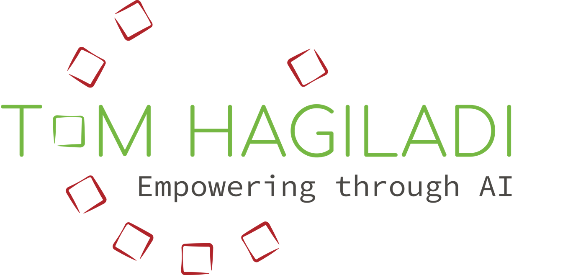

ג'מיני הלכה למעשה
השתלמות בינה מלאכותית בחינוך
תום הגלעדי
מפגש 2 · תיכון גולדה פתח תקווה · 24.11.2026
מפגש 1 · 10.11
בפעם הקודמת
01
שאלון של שתי דקות, וג'מיני ניתח את התשובות
02
שאלות יצירתיות: "מה מעניין לשאול על פוטוסינתזה?"
03
סטוריבוק: מי עושה את עבודת החשיבה - התלמיד, או הכלי?
04
הילד שיצר תמונות של מסי, ותחושת המסוגלות שקיבל
ניסיתם משהו מאז בכיתה?
שתיים-שלוש דוגמאות, בלי שמות של תלמידים.
השאלון · 14 מורים ענו · כולם השתמשו בבינה בשבועיים שלפני המפגש, 11 מהם "הרבה"
מה השאלון הראה
הבינה כבר אצלכם בהכנת חומרים. כמעט לא במשוב ובהתאמה לרמות - ולשם הולך העוזר שנבנה היום.
מפגש 2 מתוך 7
מה נעשה היום
01ג'מים וסקיליםעוזר שבונים פעם אחת
02בונים עוזר משלכםמשוב לפי מחוון, או שלוש רמות
03להתמצא בג'מינימה יש איפה
04ג'מיני מחוברהיומן, המייל והדרייב
05קנבסמסמך, ואז מצגת ממנו
מה נעשה היום · 01
ג'מים וסקילים
01ג'מים וסקיליםעוזר שבונים פעם אחת
02בונים עוזר משלכםמשוב לפי מחוון, או שלוש רמות
03להתמצא בג'מינימה יש איפה
04ג'מיני מחוברהיומן, המייל והדרייב
05קנבסמסמך, ואז מצגת ממנו
מה זה ג'ם?
עוזר שבונים פעם אחת. כותבים לו הוראות קבועות, ואפשר לצרף לו קבצים.
שם"מורה פרטית למתמטיקה"
+
הוראותמה לעשות, ומה לא
+
קבציםסילבוס, מחוון, דף הנחיות
←
כל שיחה מתחילה מכאן
כמו לתדרך מורה מחליף פעם אחת,
במקום לפני כל שיעור מחדש.
גוגל: "סקיל הוא קבוצה של פרומפטים בסיסיים שאפשר להשתמש בהם שוב ושוב"
ומה זה סקיל? ולמה צריך אותו
בונים סקיל למשימה שחוזרת על עצמה, באותן הוראות. כותבים פעם אחת, ומשתמשים בכל מקום.
ג'ם
סקיל
נכנסים אליו. שיחה נפרדת, עם עוזר אחד.
מגיע אליכם, לכל שיחה: מקלידים / או @ ובוחרים.
אחד בכל פעם.
כמה ביחד באותה שיחה: "שלוש רמות" יחד עם "המשוב שלי".
רק כשפותחים אותו.
ג'מיני יכול להפעיל לבד, כשהבקשה מתאימה.
סקילים - מגיל 18, ובינתיים בחשבון פרטי. הם לא עובדים בתוך קנבס או מחקר מעמיק.
דוגמאות לסקילים
מהדוגמאות של גוגל
- עזרה בשיעורי בית שלא נותנת תשובות
- "עוד נקודות מבט": תמיד שלוש עד חמש עמדות שונות על כל נושא
- סקיל בניית מצגות
- כתיבה בסגנון שלי
ולמורים
- "המשוב שלי" - שתי נקודות חוזק, אחת לשיפור ושאלה, בכל בקשת משוב
- "שלוש רמות" - כל חומר הופך לדף בשלוש רמות
- "בלי שמות" - עוצר כשמדביקים פרט מזהה של תלמיד
ג'מים הופכים לסקילים
חשבון פרטי
17.11.2026הג'מים לקריאה בלבד
17.12.2026הג'מים נמחקים. קבצים שצירפתם - הורידו לפני
מעכשיובונים סקיל, עם אותן הוראות
חשבון משרד החינוך
היוםיוצרים ומשתמשים בג'מים, כרגיל
יוני 2027רק אז הג'מים הופכים לסקילים
היום: בונים ג'ם בחשבון של המשרד. בחשבון פרטי - סקיל, עם אותן הוראות.
איך בונים ג'ם, או סקיל
ג'ם
בחשבון של משרד החינוך
Gems←Gem חדש←שם והוראות←ידע: קבצים←שמירה
לא רואים Gems בתפריט הצד? חפשו בהגדרות.
סקיל
בחשבון פרטי
התאמה אישית←סקילים←יצירה←יצירה ידנית←מדביקים הוראות
או "יצירה באמצעות Gemini", ומתארים במילים.
לא חייבים לכתוב את ההוראות לבד. תארו לג'מיני מה העוזר צריך לעשות, ובקשו שינסח.
התנסות · כ-20 דקות
חמישה עוזרים מוכנים - בחרו אחד ובנו
- 1מורה פרטית - לא נותנת תשובה, מובילה צעד אחר צעד
- 2דף עבודה בשלוש רמות - עם מפתח תשובות למורהמומלץ להיום
- 3עוזר משוב לפי מחוון - בודק עבודה אחת בכל פעם, מול המחוון והנחיות העבודה שבג'םמומלץ להיום
- 4מתכנן סטוריבוק פדגוגי - מטרה, פרומפט, משימה לתלמיד, ואיך בודקים
- 5בונה מחוונים - יעזור גם במטלת הסיכום
למה 2 או 3? בדיוק שם השאלון הראה שהבינה עוד לא נכנסה. בדף: עורכים את ההוראות למקצוע שלכם, מעתיקים, ובונים.
tomhagiladi.github.io/
golda-gemini-24-11-26
בדף:חמישה עוזרים
התנסות · כ-5 דקות
בודקים את העוזר, ומשתפים
01 · מריצים
על חומר אמיתי מהשבוע: עבודה של תלמיד, בלי שם. או דף שאתם כבר מלמדים ממנו.
←
02 · מתקנים
לא מה שרציתם? לא כותבים מחדש. אומרים לו במילים מה לתקן, ומעדכנים את ההוראות.
←
03 · משתפים
שלוש דקות בקבוצה: מי בנה מה, ומה הפתיע.
הפסקה
10:00
אחרי ההפסקה: להתמצא בג'מיני, לחבר את היומן, וקנבס. חוזרים עם מחשב פתוח.
מה נעשה היום · 03
להתמצא בג'מיני
01ג'מים וסקיליםעוזר שבונים פעם אחת
02בונים עוזר משלכםמשוב לפי מחוון, או שלוש רמות
03להתמצא בג'מינימה יש איפה
04ג'מיני מחוברהיומן, המייל והדרייב
05קנבסמסמך, ואז מצגת ממנו
באיזה חשבון אתם?
נכנסתם עם החשבון של משרד החינוך?החיבור יגיע למייל, ליומן ולדרייב של המשרד
נכנסתם עם החשבון הפרטי?החיבור יגיע למייל הפרטי שלכם
- עובדים ביום-יום עם המייל הפרטי? עברו קודם לחשבון הפרטי בג'מיני, ורק אז חברו.
- איך עוברים: תמונת הפרופיל בפינה העליונה ← בוחרים חשבון. אין אותו? "הוספת חשבון".
- איך יודעים איפה אתם: ליד תמונת הפרופיל של חשבון בית ספר מופיע הלוגו של הארגון, או התווית EDU.
- וזה משנה גם את המסך: בחשבון של המשרד אין צ'אט זמני ואין זיכרון, ובחירת המודל נראית אחרת.
הדגמה חיה · זו מפה, לא צילום. המסך משתנה מחשבון לחשבון
מפה של המסך
צ'אט חדש 1
חיפוש
ספרייה 2
התאמה אישית 3
השיחות האחרונות
הגדרות 4
במה אפשר לעזור?
כתבו כאן...
+5בחירת מודל ▾6
1צ'אט חדש, חיפוש, והשיחות האחרונות. אפשר לנעוץ שיחה למעלה.
2ספרייה: התמונות והקבצים שיצרתם.
3התאמה אישית: מחברים (מייל, יומן, דרייב) וסקילים.
4הגדרות: היסטוריה, והוראות קבועות לג'מיני.
5הפלוס: קבצים, מחקר מעמיק, קנבס, ועוד כלים.
6בתחתית התיבה: בחירת המודל. מה שמופיע שם - לפי החשבון.
התנסות · כ-5 דקות
סיור של חמש דקות
2חפשו שיחה קודמת שלכם, ונעצו אותה
3פתחו את הפלוס: מה יש שם?
4בתחתית התיבה: אילו מודלים אתם רואים?
5היכנסו להגדרות ומצאו את ההיסטוריה. ואיפה הג'מים?
tomhagiladi.github.io/
golda-gemini-24-11-26
בדף:הסיור
מה נעשה היום · 04
ג'מיני מחובר
01ג'מים וסקיליםעוזר שבונים פעם אחת
02בונים עוזר משלכםמשוב לפי מחוון, או שלוש רמות
03להתמצא בג'מינימה יש איפה
04ג'מיני מחוברהיומן, המייל והדרייב
05קנבסמסמך, ואז מצגת ממנו
ג'מיני שמכיר את המייל, היומן והדרייב שלכם
מייל"מה מבקשים ממני השבוע?" - סיכום מיילים מההנהלה ומרכזי השכבה, לפי תאריך יעד
יומן"איפה יש לי שעה פנויה לבדיקת עבודות?"
יומןמצלמים חוזר או לוח מבחנים: "הוסיפי ליומן"
דרייב"מצאי את המצגת שלי על... והכיני ממנה שאלות חזרה"
יחד"מצאי את המייל על הטיול והוסיפי ליומן - אבל קודם תראי לי"
ג'מיני לא שואל לפני שהוא יוצר אירוע. הוא יוצר, ואחר כך מופיע "ביטול". לכן כדאי לבקש: "קודם תראי לי, ורק אז תוסיפי".
איך מחברים
הכי פשוט: מבקשים "מה יש לי מחר ביומן?". לא מחובר? ג'מיני מציע לחבר.
או:התאמה אישית←מחברים←הוספהאו כותבים @ בצ'אט, ובוחרים.
- חיבור אחד מחבר הכול: היומן, המייל והדרייב הם אותה אפליקציה מחוברת.
- מזכירים את היומן בבקשה הראשונה. בהמשך אותה שיחה הוא כבר יודע.
- תנאי: ההיסטוריה מופעלת. (בפעם הקודמת זה נקרא "שמירת הפעילות" - גוגל שינתה את השם.)
- בחשבון של המשרד: מנהל המערכת מחליט. ברירת המחדל - פתוח.
מה זה אומר על הפרטיות שלכם
חשבון פרטי
כשההיסטוריה מופעלת, מה שג'מיני קורא יכול לשמש לאימון, וחלקו נקרא בידי בודקים.
חשבון משרד החינוך
בלי אימון, ובלי בודקים.
הסיכון
הוראות מוסתרות במייל, או בהזמנה ליומן.
משרד החינוך
אין להכניס מידע מזהה של תלמידים.
כל הפרטים והמקורות - בדף ההנחיות לתרגול.
היסטוריה: איפה, ומה משתנה
הגדרות←היסטוריה←מופעלת←השבתה
או באמצע הדרך: משאירים מופעלת, ומקצרים את המחיקה האוטומטית מ-18 חודשים ל-3.
מופעלת
- נשמרת 18 חודשים, כברירת מחדל
- בחשבון פרטי: יכולה לשמש לאימון, וחלק נקרא בידי בודקים
- החיבור למייל וליומן עובד, וגם סקילים
מושבתת
- לא מופיעה בהיסטוריה ולא משמשת לאימון
- ועדיין נשמרת בחשבון כחודשיים
- אין חיבור למייל וליומן, ואין סקילים
בחשבון של משרד החינוך: את ההגדרה קובע מנהל המערכת, לא אתם.
התנסות · כ-8 דקות
נסו: שלוש בקשות ליומן
1"מה יש לי ביומן השבוע? סדרי לפי ימים, וסמני איפה יש חור של שעה."
2"קבעי לי שעה לבדיקת עבודות ביום רביעי אחרי 16:00. קודם הראי לי, ורק אז תוסיפי."
3מצלמים חוזר או הודעה מבית הספר, ומצרפים:"מצאי כאן תאריכים והוסיפי ליומן. קודם הראי לי."
ובדף: עוד עשר בקשות למייל, ליומן, לדרייב ולשילוב ביניהם.
tomhagiladi.github.io/
golda-gemini-24-11-26
בדף:יומן, מייל ודרייב
מה נעשה היום · 05
קנבס
01ג'מים וסקיליםעוזר שבונים פעם אחת
02בונים עוזר משלכםמשוב לפי מחוון, או שלוש רמות
03להתמצא בג'מינימה יש איפה
04ג'מיני מחוברהיומן, המייל והדרייב
05קנבסמסמך, ואז מצגת ממנו
מה זה קנבס?
- מסך מפוצל: הצ'אט בצד אחד, המסמך בצד השני.
- איפה: הפלוס בתיבת הכתיבה ← קנבס. ואז כותבים מה רוצים.
- כותבים ישירות בתוך המסמך, או מסמנים קטע ומבקשים לשנות רק אותו.
- מהמחשב. בטלפון, בחשבון של המשרד, קנבס לא זמין.
היום: מסמך, ואז מצגת ממנו. בפעם הבאה: אפליקציות.
כתבי דף הנחיות לעבודת חקר...
הנה טיוטה. אפשר לשנות כל חלק.
פשטי את הפסקה המסומנת
שינוי האורךשינוי הטוןייצוא
עבודת חקר - דף הנחיות
פשטי לתלמידים מתקשים
הדגמה חיה
מסמך בקנבס: מהבקשה ועד גוגל דוקס
1מבקשים: "כתבי דף הנחיות לתלמידי י' לעבודת חקר קצרה על... עם לוח זמנים ומחוון של ארבעה קריטריונים"
2משפרים בסרגל הכלים: הצעה של שינויי עריכה · שינוי האורך · שינוי הטון
3מסמנים פסקה אחת: "פשטי את זה לתלמידים מתקשים"
4לא אהבתם? הגרסה הקודמת נשמרת, וחוזרים אליה בלחיצה
5שיתוף וייצוא ← ייצוא אל Docs, וממשיכים לעבוד שם כרגיל
בחשבון של המשרד ייתכן שאי אפשר לשתף קישור לקנבס. מייצאים לדוקס, ומשתפים משם.
ומהמסמך - מצגת
- באותו מסמך: "יצירה" ← מצגת. או בקנבס חדש: "צרי מצגת על..." ומצרפים קובץ.
- ג'מיני בונה שקופיות עם עיצוב ותמונות. את הסגנון מבקשים במילים.
- משנים דרך הצ'אט: "שקופית 3 ארוכה מדי, קצרי". כל שינוי - גרסה חדשה.
- ייצוא לגוגל סליידס, וממשיכים לערוך שם.
כתב טקסט במקום לבנות שקופיות? בקשו במפורש: "מצגת".
התנסות · כ-10 דקות
נסו: מסמך, ואז מצגת ממנו
1 · בוחרים
מסמך שאתם באמת צריכים בשבועיים הקרובים: דף הנחיות, מכתב להורים, סיכום לשיעור חזרה.
2 · משפרים פעמיים
פעם בסרגל הכלים, ופעם בסימון של קטע.
3 · הופכים למצגת
ומייצאים לגוגל סליידס.
tomhagiladi.github.io/
golda-gemini-24-11-26
בדף:קנבס
מטלת הסיכום
אתם בוחרים
אתם בוחרים את התוצר
ממה שעשיתם באמת בכיתה: מערך שיעור עם התאמה לרמות, משימת הערכה, עזר למידה מחומרים קיימים, יישומון או משחק בווייב-קודינג, או כל דבר אחר.
ובונים לו מחוון בעצמכם
מחוון אובייקטיבי, עם קריטריונים ברורים, ומיישמים אותו על התוצר. העוזר "בונה מחוונים" יעזור.
ההגשה: אפשר לעבוד בזוגות, אבל ההגשה אישית - כל אחד מגיש עבודה משלו. 2-3 עמודים: החלק היישומי, המחוון שלכם, רפלקציה, ומקורות.
30%התוצר ותהליך הלמידה
25%המחוון שלכם
30%הרפלקציה
15%מבנה ומקורות
התחילו לאסוף כבר מהיום. את מועד ההגשה נתאם עם אורית לקראת הסיום.
עד הפעם הבאה
נתראה ב-22.12
נסו דבר אחד עם התלמידים, או בשבילם:
העוזר שבניתם היום
על משימה אמיתית שלכם.
מסמך או מצגת מקנבס
שבאמת נכנסו לשיעור.
בואו עם רשמים ועם דוגמה - בלי שמות של תלמידים.
בפעם הבאה: אפליקציות בקנבס - בונים כלי קטן לכיתה, בלי לכתוב קוד.